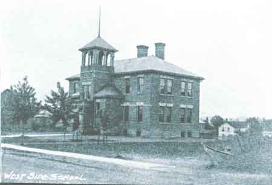
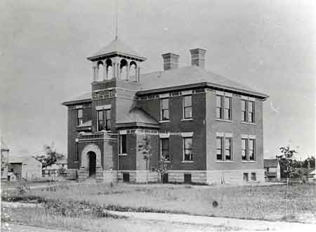
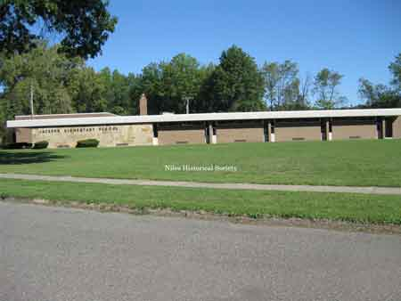
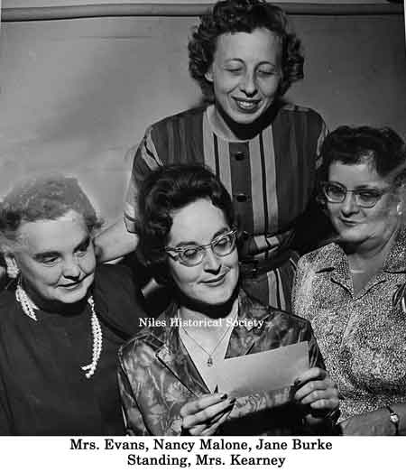

Jackson Elementary School
{kind=link}

Known as the West Side School when it was first opened in 1893.
{kind=link}

A close-up of the Jackson School building, or Warren Avenue School building.

A close-up of the Jackson School building,

First brick elementary built in Niles in1893 (Back 4 rooms ) with the 4 front rooms built in 1911.

Jackson Elementary School before the classes moved to the new school on Smith Street.

Jackson Elementary school patrol with

Photo of Jackson school children in 1958, Miss Pauline Crofford principal.

The former Jackson Elementary school being used as the administrative offices of the Niles City Schools.

New Jackson School built in 1965 was the first school in Niles to be climate-controlled.

New Jackson School built in 1965 was the first school in Niles to be climate-controlled.
{kind=link}

Jackson School built in 1965 was the first school in Niles to be climate-controlled.
{kind=link}

Mrs. Evans, Nancy Malone, Jane Burke, Standing, Mrs. Kearney

Photograph of Jackson Elementary School.